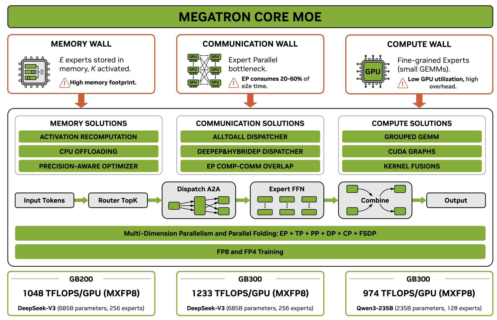

近年、パラメータ数を抑えつつ巨大なモデル容量を実現するアプローチとして、Mixture-of-Experts (MoE) アーキテクチャがLarge Language Model (LLM) の最前線を牽引している。推論時の計算コストを抑えながら性能を飛躍的に向上させるこの技術は、DeepSeek-V3やMixtralなどに代表される画期的なモデルを生み出した。しかし、数千億から数兆パラメータに達する巨大なMoEモデルを効率的にトレーニングすることは、従来のDenseモデルとは根本的に異なるシステム上の課題を伴う。
本稿では、NVIDIAが発表した技術レポート「Scalable Training of Mixture-of-Experts Models with Megatron Core」に基づき、Megatron-Core MoEフレームワークがどのようにこれらの課題を克服し、数千GPU規模での高効率な分散学習を実現しているのか、そのアーキテクチャと最適化手法の全貌を解説する。
MoEトレーニングにおける根本的課題と「Three Walls」
MoEモデルは、各入力tokenに対してネットワーク全体（Expertの集合）の一部のみを動的にアクティベートするSparse（疎）な構造を持つ。この特性は、推論効率を高める一方で、学習システムにおいては「Parameter-Compute Mismatch（パラメータと計算量の不一致）」という根本的な非対称性を引き起こす。
Denseモデルでは、パラメータ数とtokenあたりの計算量が比例するため、GPUを増やすことでメモリと計算の負荷をバランスよく分散できる。しかしMoEモデルでは、パラメータの総量に対してtokenあたりの計算量が極端に少ない。たとえば、DeepSeek-V3-685Bモデルでは、総パラメータ数が685Bであるのに対し、1つのtokenあたりにアクティブになるパラメータはわずか37Bに過ぎない。
この非対称性により、MoEトレーニングには以下の3つの巨大な障壁、すなわち「Three Walls」が立ちはだかる。
- Memory Wall (メモリの壁): tokenごとに使用されるExpertがごく一部であっても、全Expertのパラメータ、勾配、およびOptimizer stateを常にGPUメモリに保持しておく必要がある。
- Communication Wall (通信の壁): Expertを複数のデバイスに分散させるExpert Parallelism (EP) を採用するため、tokenを適切なGPUに配送し、計算後に回収するall-to-all通信が大量に発生する。これはGPU間の帯域幅を激しく消費する。
- Compute Efficiency Wall (計算効率の壁): 各Expertに割り当てられるtoken数は細かく断片化されるため、GPUのTensor Coreを十分に飽和させるだけの行列演算（GEMM）サイズを確保しにくい。さらに、細かなKernel launchがHost（CPU）側のオーバーヘッドを増大させる。
Megatron-Core MoEは、これら3つの壁を単独のチューニングではなく、相互に連携する統合的なシステム設計によって打破する。

Parallel Folding：Dense-Sparse Mismatchの解消
巨大なモデルを学習する際、従来はTensor Parallelism (TP)、Pipeline Parallelism (PP)、Context Parallelism (CP)、Data Parallelism (DP) といった並列化戦略が用いられてきた。MoEモデルにおいては、これに加えてExpertをデバイス間で分割するExpert Parallelism (EP) が不可欠となる。
ここで生じるのが「Dense-Sparse Mismatch」と呼ばれる問題である。Transformerブロック内において、Attention層（Dense）は長いSequenceや巨大なQKV行列を効率的に処理するために高いTPやCPを必要とする。一方で、MoE層（Sparse）は細分化された多数のExpertを分散させるために高いEPを必要とし、高いTPを適用すると計算効率が著しく低下する。
従来のフレームワークでは、モデル全体で同一の並列化構成を強要していたため、\(EP \le DP\) という制約に縛られ、最適なリソース配置が不可能であった。Megatron-Core MoEは、この問題に対して Parallel Folding というアプローチを導入した。
Parallel Foldingは、Attention層とMoE層の並列化マッピングを完全にDecouple（分離）する。これにより、Attention層では高いTPやCPを設定して計算とメモリを最適化しつつ、MoE層では高いEP（および \(ETP=1\)）を独立して適用することが可能となる。結果として、GPUクラスタ全体にわたる並列化の自由度が飛躍的に向上し、ハードウェアトポロジー（NVLinkやInfiniBandなど）に最適化された配置が実現されるのである。
Three Walls を打ち破る統合的最適化
Megatron-Core MoEは、前述の「Three Walls」に対して包括的なソリューションを提供する。最適化の一方を追求すると他方が悪化するトレードオフの連鎖を断ち切るため、以下の技術が統合的に適用されている。
Memory Wall の克服
アクティベーションやパラメータによる巨大なメモリ要件に対処するため、多角的なアプローチが採用されている。
- Memory-Efficient Permutation: ルーティング時の確率に基づく重み付け処理を数学的に再構築し、余分な中間tensorの生成を抑える。これにより、計算オーバーヘッドをゼロに保ちながらメモリフットプリントを大幅に削減する。
- Fine-grained Recomputation と Activation Offloading: メモリ消費の激しい処理をすべて保持するのではなく、計算コストの低いLayerNormやActivationなどを選択的に再計算（Recomputation）する。さらに、GPUメモリに収まらないActivationをバックグラウンドでCPUメモリに非同期Offloadingすることで、PCIe帯域と計算のオーバーラップを図る。
- FSDP と Distributed Optimizer: EPと連携したFully Sharded Data Parallelism (FSDP) により、ExpertのパラメータやOptimizer stateをデバイスグループ間で分割（Shard）し、メモリを極限まで節約する。
Communication Wall の突破
EPによるall-to-all通信の遅延は、そのままGPUのアイドル時間につながる。これを防ぐための技術が以下である。
- Optimized Token Dispatchers: 従来のNCCLベースの通信ではなく、ハードウェアプリミティブを極限まで活用する DeepEP や HybridEP といった最適化されたDispatcherを利用し、帯域幅の利用効率を最大化する。
- Communication-Computation Overlap: 1F1B（One Forward, One Backward）のパイスプラインスケジュールにおいて、隣接するMicro-batchの計算とall-to-all通信を並行して実行する。これにより、巨大な通信レイテンシを計算処理の裏側に完全に隠蔽（Overlap）することが可能となる。
Compute Efficiency Wall の解消
GPUの計算能力を最大化し、Hostのボトルネックを解消するため、以下の手法が実装されている。
- Grouped GEMM と Kernel Fusion: 断片化した多数のExpertの計算を1つの巨大な演算としてまとめるGrouped GEMMを採用。また、Routerの計算やtokenのPermutation処理など、細かい処理をKernel Fusionによって結合し、Kernel数を劇的に削減する。
- CUDA Graphs と Sync-Free Execution: GPU実行におけるCPUからのLaunchオーバーヘッドを排除するため、静的な実行グラフを構築するCUDA Graphsを活用する。さらに、Dropless MoE（tokenを破棄しない厳密なルーティング）特有の動的なtensor形状に対応するため、ホスト・デバイス間の同期を不要にする Sync-Free モードを実現している。
Reduced-Precision Training (低精度トレーニング) の戦略
Megatron-Core MoEにおいて、FP8やNVFP4といった低精度フォーマットの活用は、Memory、Communication、Compute Efficiencyのすべての壁に同時にアプローチするクロス・カッティングな最適化である。データのサイズを半減させることでメモリを節約し、通信量を減らし、Tensor Coreによる演算スループットを最大化する。
しかし、MoE特有の課題として、過度な量子化（Quantization）はルーティングの決定にノイズを与え、学習の不安定化やExpertの崩壊（Expert Collapse）を招く危険性がある。
この課題に対し、Megatron-Core MoEは Selective Precision（選択的精度） 戦略を採用している。数値的な敏感さが要求されるRouter、Embedding、出力層、およびOptimizer stateはFP32またはBF16の高精度に保ちつつ、計算の大部分を占めるExpert GEMMに対して強力なQuantization（HopperでのBlockwise FP8、BlackwellでのMXFP8/NVFP4など）を適用する。これにより、モデルの収束性を一切損なうことなく、極めて高いスループットを達成している。
現代的課題：Long-Context と Reinforcement Learning への対応
LLMの進化に伴い、数万から数十万tokenに及ぶLong-Contextの処理と、Reinforcement Learning (RL) による事後学習（Post-training）が不可欠となっている。Megatron-Core MoEはこれらの新しいワークロードにも適応している。
Long-Context Trainingにおけるパラダイムシフト
Sequence長が32K tokenを超えると、計算の支配要因はMoE層（計算量が \(\mathcal{O}(s)\)）からAttention層（計算量が \(\mathcal{O}(s^2)\)）へと移行する。このとき、最大の課題はActivation memoryの爆発である。Megatron-Core MoEは、Context Parallelism (CP) とTensor Parallelism (TP) を最適に組み合わせることでデバイスあたりのSequence長を一定に保ち、長文脈であっても効率的な学習を可能にしている。
Reinforcement Learning (RL) サポート
RLにおいては、生成されるTrajectory（応答）の長さが極端にばらつくため、固定長のバッチ処理では大量のPaddingによる無駄が発生する。これを解決するため、Megatron-CoreはPaddingを排除する Packed Sequences に対応している。 さらに、可変長Sequenceに起因する負荷の不均衡を是正するため、Micro-batchごとに最適なCPを動的に割り当てる Dynamic CP 機能を提供している。また、InferenceとTraining間で発生する微小なルーティングの差異による不安定性を排除するため、推論時のルーティング結果を学習時に再現する Router Replay などのProduction Featuresも実装されている。
実証された驚異的なパフォーマンス
これらすべての最適化を統合した結果、Megatron-Core MoEは最新のNVIDIA GPU上で驚異的なスループットを実証している。
DeepSeek-V3-685Bモデルを用いた検証では、GB300プラットフォーム上で最大 1,233 TFLOPS/GPU、GB200上で 1,048 TFLOPS/GPU を達成した。また、H100を用いた1024 GPUのクラスタにおいても強固なスケーラビリティを示しており、アーキテクチャの特性に合わせたハードウェアとソフトウェアの高度なCo-design（協調設計）の威力を証明している。
まとめ
Mixture-of-Expertsは、未来のAIモデルにおける標準的なアーキテクチャとしての地位を確立しつつある。しかし、そのポテンシャルを完全に引き出すためには、Memory、Communication、Compute Efficiencyという強固なシステム上の壁を打ち破る必要がある。
Megatron-Core MoEは、Parallel Foldingによる並列化の分離、DeepEP/HybridEPによる通信の最適化、Grouped GEMMやCUDA Graphsによる計算効率の極大化、そしてFP8/FP4による低精度トレーニングを統合することで、この壁を乗り越えた。さらにLong-ContextやRLに向けた最新の機能を提供することで、Megatron-Core MoEは最先端のLLM開発を支える不可欠なインフラストラクチャとなっている。大規模なAIシステムの未来は、こうした精緻なシステム最適化のうえに構築されていくのである。